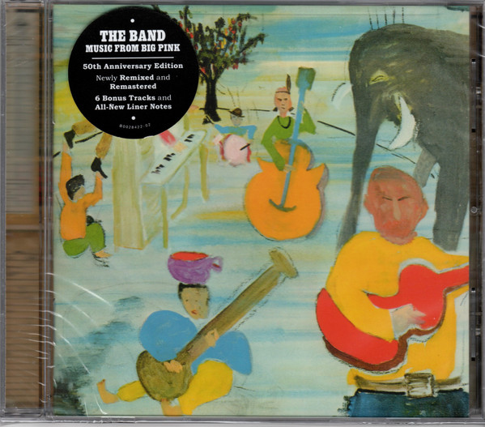

CD
Music From Big Pink
The Band
Media: — · Sleeve: —
—
Personal
Discogs SuggestedCA$35.32
Discogs MedianCA$35.32
Discogs HighCA$35.32
- Physical Copy ID
- BB-CD-0158
- Year
- 2018
- Label
- Capitol Records
- Catalog #
- B0028422-02
- Country
- USUS
- Genre / Style
- Rock · Folk Rock, Acoustic, Blues Rock